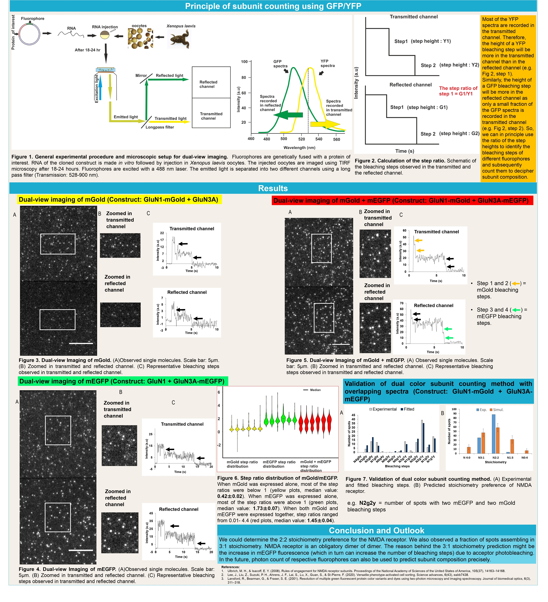
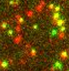
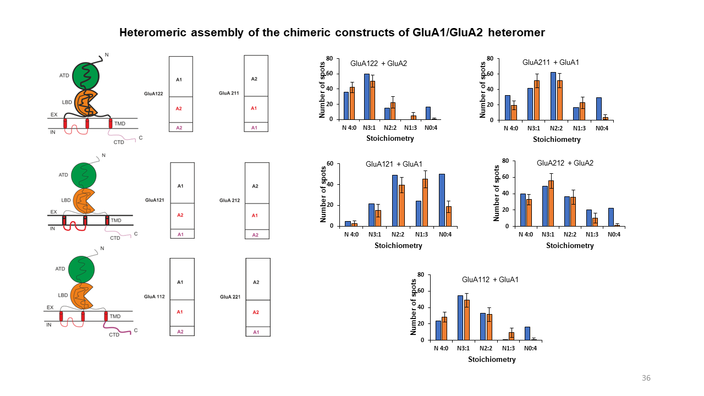
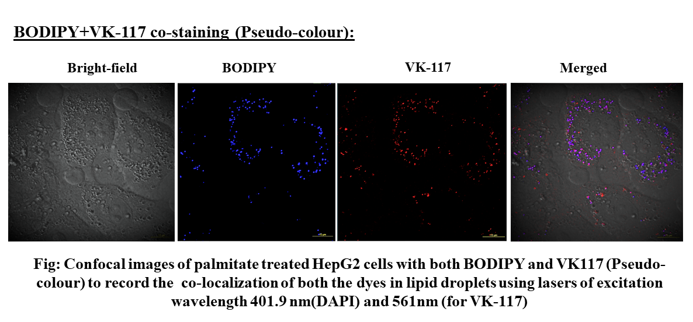
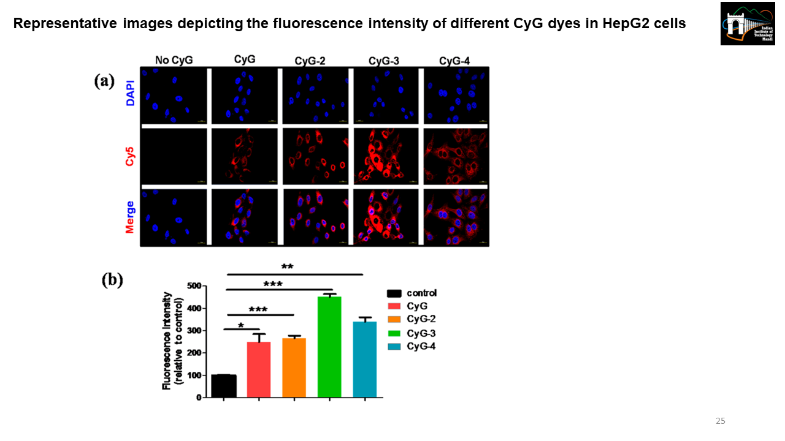
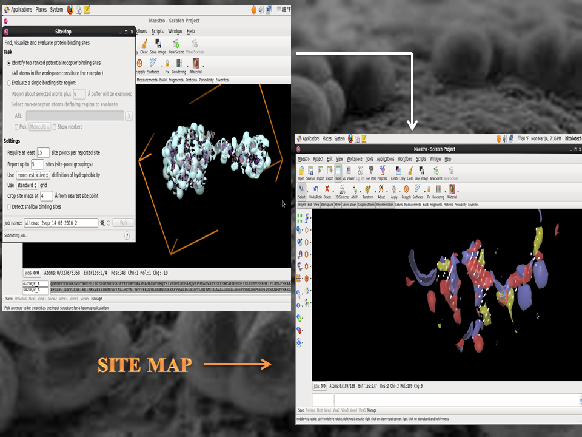

Dual-color subunit counting method using SNAP-tag and mEGFP
Subunit counting using photobleaching of fluorophores is a robust single-molecule imaging method to count the number of subunits of a protein in the native environment. Organic dyes are bright, photostable, and often of smaller size than fluorescent proteins. They have the requirements to be used in bleaching step counting. SNAP-tag (a 20 kDa tag and a self-labeling enzyme) is highly specific and covalently binds with its substrate i.e. benzyl guanine derivatives. If an organic dye (e.g. DY649P1) is tagged with benzyl guanine derivative, it can give fluorescence when bound with SNAP-tag. I aimed to use this property of SNAP-tag for intracellular bleaching step counting together with GFP for subunit counting.
Dual-color subunit counting method using mGold (YFP variant) and mEGFP
The photostabilities of the blue and red fluorescent proteins are comparatively lower than most of the green and yellow fluorescent proteins. The emission spectra of the green/yellow fluorescent proteins significantly overlap with each other. Also, we want to accommodate as many fluorophores as possible orthogonally to decipher multimeric protein complexes. If we use two fluorophores with overlapping spectra, we can achieve more space to include multiple fluorophores for bleaching step counting. Therefore, in this project, I established a principle to unmix GFP and YFP emission spectra for single-molecule imaging to count both GFP and YFP bleaching steps.
Binding kinetics of the core and auxiliary subunits of AMPA receptor

The abstract and representative image is taken from "Yu, C., Runge, H. F. P., Mukhopadhyay, A., Zolles, G., & Ulbrich, M. H. (2023). γ-2 and GSG1L bind with comparable affinities to the tetrameric GluA1 core. Cellular & molecular biology letters, 28(1), 54. https://doi.org/10.1186/s11658-023-00470-9"
'The AMPA-type ionotropic glutamate receptor mediates fast excitatory neurotransmission in the brain. A variety of auxiliary subunits regulate its gating
properties, assembly, and trafcking, but it is unknown if the binding of these auxiliary
subunits to the receptor core is dynamically regulated. Here we investigate the interplay of the two auxiliary subunits γ-2 and GSG1L when binding to the AMPA receptor
composed of four GluA1 subunits. We use a three-color single-molecule imaging approach in living cells,
which allows the direct observation of the receptors and both auxiliary subunits. Colocalization of diferent colors can be interpreted as interaction of the respective receptor
subunits'.
Deciphering membrane receptor stoichiometry using multicolor subunit counting method
 GluA1 and GluA2 are two of the pore-forming subunits of the AMPA receptor. GluA1/GluA2 heteromers assemble in 1:3, 2:2 or 3:1 stoichiometries but have a strong preference for 2:2 assembly. Until now, it is quite unclear what drives this preference. In this project, we observed and analyzed the assembly of GluA1/GluA2 heteromers in the native environment using the mEGFP/SNAP-tag multicolor subunit counting method. Besides, we examined if the 2:2 stoichiometry preference of GluA1/GluA2 is driven by any particular structural domain of the AMPA receptor.
Development of a photostable AIE luminogen for rapid detection of lipid droplets in live cells
The motivation for the research was the detection of lipid droplets that are important biomarkers for different metabolic diseases such as type 2 diabetes mellitus. Many commercially available stains/dyes are used to image lipid droplets like Nile red, Oil Red O, BODIPY, etc. Aggregation-caused quenching (ACQ) is the main disadvantage associated with these dyes which can be overcome with a similar structure-dependent but opposite property that is called aggregation-induced emission (AIE). Therefore a new AIE luminogen was developed, characterized, and applied to image the lipid droplets.
The effect of aliphatic chain modification of NIR fluorescent dyes using albumin si-RNA in live cells
CyG, a renal clearable albumin binding NIR emissive probe has two units i.e. first an albumin binding unit and second a fluorescence reporting unit. The aliphatic chain number controls the hydrophobicity of the dye which regulates the albumin-binding property of the dye. We made different CyG constructs by making aliphatic chain modifications (e.g., ethyl, propyl, hexyl, etc.) and then did live cell imaging using confocal microscopy to see which CyG variant has optimum albumin binding. [Representative image is taken from Biswas, B. et al. 2019]
Inhibition of sialic acid synthase from Neisseria meningitidis by a tetrahedral intermediate analog using structure-based drug designing
It was a structure-based drug designing project using Autodock and Schrödinger. Neisseria meningitidis (the meningococcus); a fastidious, encapsulated, aerobic gram-negative diplococcus causes significant morbidity and mortality in children and young adults worldwide. N. meningitidis can be either encapsulated or not. However, N. meningitidis strains causing invasive disease and isolated from sterile sites such as the blood or the CSF are almost always encapsulated. The main meningococcal capsular polysaccharides associated with invasive disease are composed of sialic acid derivatives. The Neisseria meningitidis sialic acid synthase (NeuB) catalyzes the metal-dependent condensation of N-acetylmannosamine (ManNAc) and phosphoenolpyruvate (PEP) to generate N-acetylneuraminic acid (NeuAc or sialic acid). The potent inhibitor of sialic acid synthase is a stable deoxy analogue of the tetrahedral intermediate presumed to form in the NeuB reaction. Therefore, the aim was to select a target inhibitor for NeuB using structure based drug designing and modify the inhibitors to enhance their inhibitory properties.